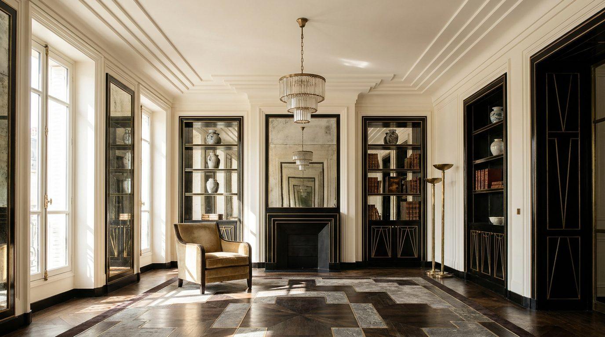

Atlante · FR-10 · Francia · Île-de-France
Art Déco parigino (1927)
Esempi · esterno e interno


Perché funziona
alternativa più grafica all'haussmaniano; nero laccato e specchi argentati fanno da fondo perfetto per metalli e marmi.
Architettura · elementi riproducibili
- Modanature a gradoni, stucchi geometrici, ferri a motivi stilizzati
- Laccatura nera lucida, specchi argentati a pannelli, ottone
- Porte a pannelli riquadrati con maniglie geometriche; HSP 3,0–4,0 m
- Pavimento a scacchiera o marmo; camino a blocco squadrato
Luce
contrastata, tagli netti, specchi come seconda sorgente; 4000–5000 K con accenti a 2700 K; neri profondi ma con dettaglio.
Prompt di generazione (EN)
Art Deco Parisian interior, 1927, black lacquered walls with stepped geometric mouldings, silvered mirror panels, brass skirting and handles, ivory ceiling, emerald velvet armchair, marble checkerboard floor, geometric chandelier. Controlled contrast lighting: cool daylight from a side window at 4800 K, warm accent from the chandelier, crisp specular highlights on lacquer and brass. 35 mm lens, f/5.6, camera at 1.5 m, frontal symmetrical framing, no people, 4:5.
Errori tipici da controllareArt Déco hollywoodiano (palme, piume); geometrie asimmetriche; lacca resa opaca.
Riferimenti reali
- Hôtel Martel, rue Mallet-Stevens, 16e, Robert Mallet-Stevens, 1927, per gli scultori Jan e Joël Martel; monumento storico dal 1990 apri ↗
- Villa Cavrois (1929–1932)